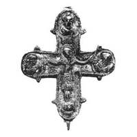

Catalog › CE-0629 · KOR2003-II.1.1.8
Valvă de față de encolpion cu Răstignire în relief înalt, Maica Domnului, Ioan Teologul și Savaoth în medalioane
sec. XII–prima jumătate XIII (1101–1300) · Vasîliv, raionul Zastavna, regiunea Cernăuți, Ucraina · Centrul bucovinean de cercetări arheologice (BȚAD) de pe lângă Universitatea Națională din Cernăuți „Iu. Fedkovici”, fonduri
single valve of a reliquary cross, aramă; c. XII–prima jumătate XIII (1101–1300); found at Vasîliv, raionul Zastavna, regiunea Cernăuți, Ucraina; kept at Centrul bucovinean de cercetări arheologice (BȚAD) de pe lângă Universitatea Națională din Cernăuți „Iu. Fedkovici”, fonduri.


Identificare
- Categorie
- Valvă izolată
- Material
- Aramă
- Tehnică
- Turnare în relief; Gravare (incizie)
- Dimensiuni
- Î 79 × L 68 mm
Iconografie
- Avers
- Răstignirea (Hristos cu perizoma); Sf. Ioan
- Descriere avers
- Valvă de față cu capete rotunjite, ușor lărgite, cu medalioane marcate prin proeminențe-«lacrimi»; relief înalt, conservare nu rea, cu orificii trecătoare din coroziune și balamaua de sus pierdută; pe interior adâncituri ce repetă reliefurile exterioare. În centru Răstignirea mare; în jurul capului lui Hristos nimb cruciform; părul lung, cu cărare la mijloc, cade în două șuvițe pe umeri; picioarele sprijinite pe suppedaneum dreptunghiular. Deasupra, în tăbliță încadrată de «funie», monograma IX incizată. Figura lui Hristos aproape dreaptă, brațe îndoite la coate și larg desfăcute, palmele deschise ieșind în afara medalioanelor; pe mâna stângă șase degete; capul înclinat spre umărul drept; de la brâu la genunchi trupul înfășurat în perizoma. În medalioane, busturi în relief ale Maicii Domnului și ale lui Ioan Teologul, sus Savaoth. Marginea ornamentată cu crestături oblice ce imită o funie.
- Inscripții
- IX (în tăbliță); [IXM] [POH] (sub brațele lui Hristos, adânci, neclare)
Datare și atribuire
- Datare
- sec. XII–prima jumătate XIII (1101–1300)
- Centru
- Necunoscut
- Tipologie
- Korzukhina–Peskova 2003, tip II 1 1
Descoperire
- Localitate
- Vasîliv
- Regiune
- raionul Zastavna, regiunea Cernăuți
- Țară
- Ucraina
- Context
- Așezare
Păstrare și referințe
- Colecție
- Centrul bucovinean de cercetări arheologice (BȚAD) de pe lângă Universitatea Națională din Cernăuți „Iu. Fedkovici”, fonduri
- Bibliografie
- G. F. Korzukhina, A. A. Peskova, Древнерусские энколпионы. Нагрудные кресты-реликварии XI–XIII вв., Sankt-Petersburg, 2003 [Korzukhina–Peskova 2003], p. 62, cat. nr. II 1 1/8, reprodusă la Табл. 22 (planșe, p. 264). Bibliografie citată în sursă: Пивоваров 2000, 221, рис. 1, 2; Пивоваров 2001, 68–69, фото 8, рис. 9.
- Figura
- Табл. 22
- Planșe
- Korzukhina–Peskova 2003, Табл. 22 (planșă fără paginație proprie în PDF; p. 264 tipărită)
- Observații
- Datare după Peskova: sec. XII–prima jumătate XIII. Circumstanțe: Găsit la începutul anilor 1960 pe așezarea (posadul) cronicarului Vasîliv, la construirea unei anexe în gospodăria locuitoarei K. P. Paziuk; fusese bătut în cuie pe ușa construcției și a stat acolo până în 1999; predat în timpul cercetărilor de teren pe teritoriul satului lui S. V. Pivovarov. Inscripții de verificat pe original. Coordonate: nu sunt date în sursă.
Citare: Corpus Encolpiorum, CE-0629, Valvă de față de encolpion cu Răstignire în relief înalt, Maica Domnului, Ioan Teologul și Savaoth în medalioane, --root/piese/KOR2003-II.1.1.8/ (accesat 2026-10-17).